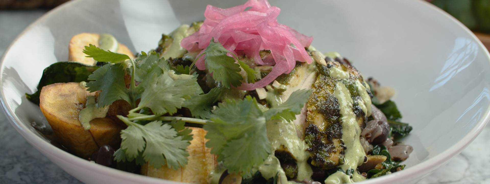

CHILLI BEEF LETTUCE WRAP RECIPE
Great food doesn't have to be complex, as these simple beef wraps show. They are really quick to make and perfect with a few beers at the start of the evening.

VIEW RECIPE
Mojo-Marinated Chicken Quinoa Bowl with Spinach, Plantains, Black Beans, and Mojo Crema
Serves 2. Mojo sauce lends a bright, punchy, herby flavor to this satisfying dish--double the sauce and save the leftovers for dipping crudité or marinating then grilling shrimp.

Spicy Shawarma Chicken Wrap Recipe
Shawarma is the name of the vertical spits of meat you see in Arabic restaurants, normally eaten in pitta bread with tabbouleh, cucumber and tomato and topped with houmous or tahini.